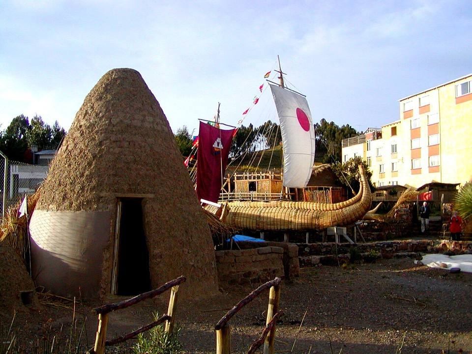
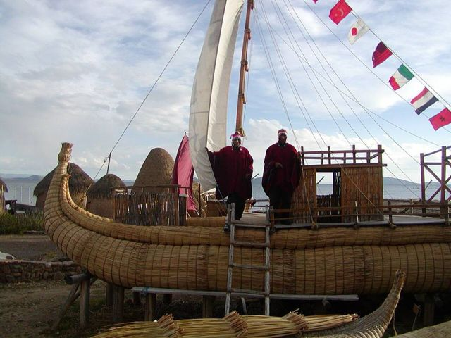

Huatajata
La Paz Department · Culture and history

Huatajata, on the shore of Titicaca's Lago Menor, is known for its builders of boats made of totora, the lake's reed. Aymara craftsmen from the area even built the boats of explorer Thor Heyerdahl. It's also a starting point for the lake's small islands and a pleasant stop on the road to Copacabana.
3,820 maltitude
0 to 1 dayto spend there
High altitude. Above 3,500 m, altitude sickness (soroche) is common. Arrive gradually, drink plenty and take it slow on the first day.
Things to do
- Totora reed boat workshops
- Boats to Pariti and the Lago Menor islands
- Lake trout facing the mountains
What to eat
- Titicaca troutLake trout, fried or “a la plancha”, with rice, fries and salad. Eaten on the beach in Copacabana.
- Ispi and pejerreySmall lake fish, fried and crispy, eaten whole with a squeeze of lime.
Tip. On the La Paz – Copacabana road, about 1 h 30 from La Paz.
Also here
- Crafts and markets Totora reed boatsOn Lake Titicaca, boats are still built from the lake's reed. Huatajata's craftsmen also make small models.
How to get to Huatajata
Suriki Boat · about 30 min
Motorboat from Huatajata.
Isla Pariti Boat · about 1 h
Motorboat from Huatajata or Quehuaya.
La Paz Road (bus, car) · 1 h 30
La Paz – Copacabana bus (get off at Huatajata).
Photos of Huatajata


More places in this region
 Copacabana (Lake Titicaca)A small town on the shore of Lake Titicaca, gateway to the Isla del Sol.
Copacabana (Lake Titicaca)A small town on the shore of Lake Titicaca, gateway to the Isla del Sol. Isla del SolSacred island of the Incas: trails, ruins and views of the Cordillera Real.
Isla del SolSacred island of the Incas: trails, ruins and views of the Cordillera Real. Isla de la LunaA small neighbouring island with the temple of the Virgins of the Sun (Iñak Uyu).
Isla de la LunaA small neighbouring island with the temple of the Virgins of the Sun (Iñak Uyu). Suriki IslandThe island of reed-boat builders, including those of the Ra II expedition.
Suriki IslandThe island of reed-boat builders, including those of the Ra II expedition. Isla ParitiA small Titicaca island and its museum of Tiwanaku pottery found on the spot.
Isla ParitiA small Titicaca island and its museum of Tiwanaku pottery found on the spot.